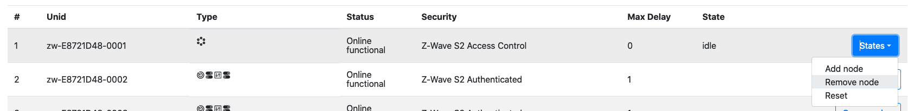
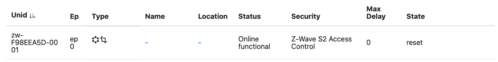
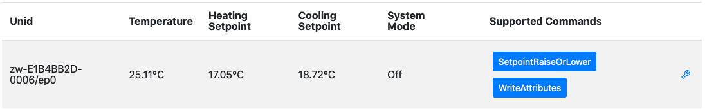
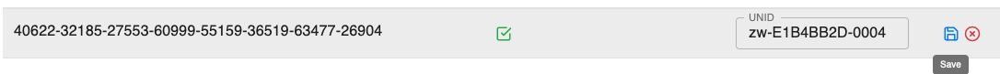
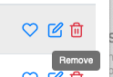

Z-Wave Protocol Interoperability
This product can be operated in any Z-Wave network with other Z-Wave-certified devices from other manufacturers. All mains operated nodes within the network will act as repeaters regardless of vendor to increase reliability of the network.
Device Type and Role Type
The ZPC has a Generic Controller Device type and uses the following device classes:
- GENERIC_TYPE_GENERIC_CONTROLLER
- SPECIFIC_TYPE_NOT_USED
The ZPC uses the Central Static Controller (CSC) role type, which supports and takes the SIS role by default.
The ZPC does not support the following network functionalities:
- Learn Mode
- Failed Replace
Manufacturer-Specific Information
The ZPC uses the following manufacturer-specific information:
- Manufacturer ID : 0x0000
- Product Type : 0x0005
- Product ID : 0x0001
- Firmware ID : 0x0001
Z-Wave Plus Info Information
The ZPC uses the following Z-Wave Plus Info information:
- Role Type : 0x0000 (CSC)
- Node Type : 0x0000
- Installer Icon Type : 0x0100
- User Icon Type : 0x0100
Network Management Information
Network Management
The Dev GUI User's Guide describes how to perform the following operations:
- Direct range and Network-Wide Inclusion (Add) of other nodes in the network.
- Direct range and Network-Wide Exclusion (remove) of other nodes (in any network).
Learn Mode and Controller Replication are not available.
Adding a Node
To add a new node in the current network, select the ZPC entry in the node list and locate the "States" button. Select the "Add node" option.

The ZPC will go from Idle to Add node. Activate learn mode on the node that you want to include in the network. When the network inclusion happens, a new node will appear in the list of nodes.
To cancel an inclusion attempt, select the "Idle" option under the "States" button.
Removing a Node
To remove a node from its network (it can be either the ZPC's network or a foreign network), select the ZPC entry in the node list and locate the "States" button. Select the "Remove node" option.

The ZPC will go from Idle to Remove node. Activate learn mode on the node that you want to exclude from its network. When the network exclusion happens, the ZPC state will return to Idle. The ZPC state will return to idle automatically after excluding a node.
To cancel an exclusion attempt, select the "Idle" option under the "States" button.
Management Operations for Individual Nodes
When a network management is to be targetted for a particular node, the list of available commands is available in the node list page, under the Commands button.

- Interview will perform a new node Interview
- RemoveOffline will perform a Z-Wave Remove Failed Node.
- DiscoverNeighbors will request Z-Wave node to perform a neighbor discovery. It will have no effect for nodes includes with Z-Wave Long Range.
While a node is under interview, its status will be Online interviewing. When The interview is over, its status moves back to Online functional.
When performing a RemoveOffline on a node, no visible update is made on the node status, however, the ZPC node entry will move its network management state to "Remove node".
When requesting a DiscoverNeighbors, no visible feedback will be available on the UI.
Command Class Information
The following table shows supported and controlled Z-Wave Command Classes by the ZPC.
| Command Class | Version | Support | Control | Security Level | Comment |
|---|---|---|---|---|---|
| Association | 2 | x | x | Network Scheme | |
| Association Group Info (AGI) | 3 | x | x | Network Scheme | |
| Basic | 2 | x | N/A | ||
| Battery | 3 | x | N/A | Control Part is auto-generated. | |
| Binary Sensor | 1 | x | N/A | Control Part is auto-generated. | |
| Binary Switch | 2 | x | N/A | ||
| Central Scene | 3 | x | N/A | ||
| Device Reset Locally | 1 | x | x | Network Scheme | |
| Door Lock | 2 | x | N/A | Control Part is auto-generated. | |
| Firmware Update | 7 | x | x | Network Scheme | |
| Inclusion Controller | 1 | x | x | Unencrypted | |
| Indicator | 3 | x | x | Network Scheme | |
| Manufacturer Specific | 2 | x | x | Network Scheme | |
| Multi Channel | 4 | x | N/A | ||
| Multi Channel Association | 3 | x | x | Network Scheme | |
| Multi Command | 1 | x | Unencrypted | ||
| Multilevel Sensor | 11 | x | N/A | ||
| Multilevel Switch | 4 | x | N/A | Partial control: 1. we do not use start/stop level change. 2. we do not support the 0xFF duration | |
| Notification | 3 | x | N/A | Partial Control: 1. No Push/Pull discovery is done. 2. No Pull sensor support. 3. Unknown types are not supported. 4. No Regular probing is done. | |
| Powerlevel | 1 | x | Network Scheme | ||
| Security 0 | 1 | x | x | Unencrypted | |
| Security 2 | 1 | x | x | Unencrypted | |
| Supervision | 2 | x | x | Unencrypted | |
| Thermostat Mode | 3 | x | N/A | Partial Control: Not all modes can be set | |
| Thermostat Setpoint | 3 | x | N/A | Partial Control: 1. No discovery of ambiguous types in v1-v2 2. Only a few setpoints can be configured. 3. Precision/size fields in the set are determined automatically by the controller. | |
| Time | 1 | x | Unencrypted | ||
| Transport Service | 2 | x | x | Unencrypted | |
| Version | 3 | x | x | Network Scheme | |
| Wake Up | 3 | x | N/A | ||
| Z-Wave Plus Info | 2 | x | x | Unencrypted |
Association / Multi Channel Association Command Classes Information
The ZPC supports the following Association Groups
| Grouping Identifier | Maximum Number of Associations | Group Name | Usage/Trigger |
|---|---|---|---|
| 1 | 10 | Lifeline | Lifeline reports. |
The ZPC also controls the Association and Multi Channel Association. It only establishes lifeline associations.
Node status
It is not possible to see association groups state from the Dev GUI.
Sending commands
It is not possible to issue Association / Multi Channel Association commands from the Dev GUI.
Basic Command Class Information
The ZPC controls the Basic Command Class. It is possible to set and see the current state of an unknown actuator node using Basic.
Basic will be used, only if the supporting node does not support any actuator command classes that the ZPC controls (fully or partially). In this case, the ZPC will attempt to discover if the Basic Command Class is supported by issuing a Basic Get Command. If the node replies, the Basic functionality will be presented as an OnOff functionality.
It is not possible to see if the ZPC is using Binary Switch or Basic Command Class.
Node status
To see the state of the Basic Command Class, select the OnOff page from the left menu on the Dev GUI.

The state of the node is displayed for each entry, it only consist in a single On/Off state, represented with a small light bulb.

Sending commands
To trigger a Basic Set, select one of the 3 available commands. (On, Off, Toggle).
These command will have an effect only if there is a difference between the reported state and the command indication. i.e. the On command for a node already on will not trigger any command to be sent.
Battery Command Class Information
The ZPC controls the Battery Command Class. It is possible to see the current Battery state for supporting nodes.
Node status
To see the state of the Battery Command Class, select the Battery page from the left menu on the Dev GUI.

The last reported battery percentage will be visible on the attribute list. The Battery Low indication will be set to "true" if the battery level is less than 10% or if the node has reported a battery = 0xFF notification.

Sending commands
It is not possible to send Battery Commands to supporting nodes.
Binary Switch Command Class Information
The ZPC controls the Binary Switch Command Class. It is possible to set and see the current level of a binary switch supporting node.
Node status
To see the state of the Binary Switch Command Class, select the OnOff page from the left menu on the Dev GUI.
The state of the node is displayed for each entry, it only consist in a single On/Off state, represented with a small light bulb.
Sending commands
To trigger a Binary Switch Set, select one of the 3 available commands. (On, Off, Toggle).
These command will have an effect only if there is a difference between the reported state and the command indication. i.e. the On command for a node already on will not trigger any command to be sent.
Central Scene Command Class Information
The ZPC controls the Central Scene Command Class. It is possible to see which scene is active or has been activated last in supporting nodes.
Node status
To see the state of the Central Scene Command Class, select the Scenes page from the left menu on the Dev GUI.
The state of the node is displayed for each entry, it only consist in the following attributes:
- SceneCount: The total number of scenes/key attributes combinations that could be used by the supporting node.
- CurrentScene: The active or last active scene. This is a unique number derived from the Scene Number and Key attribute combination. If no Central Scene Notification has been received yet, this value stays undefined.
- SceneValid: Indicates if the Scene is active, meaning that the scene was activated within the last 5 seconds or is being activated (e.g. button is being held down). When this is set to false, it means that the CurrentScene attribute represents the last active scene.
Sending commands
It is not possible to issue Central Scene commands to supporting nodes.
Device Reset Locally Command Class Information
The ZPC can be reset to default. The operation is available with other Network Management operations in the Dev GUI main page.

When initiating a reset operation, the ZPC will change it state to "Reset"

The ZPC will attempt to notify the lifeline destination for a short while and reset its network afterwards. The ZPC node entry and all the nodes in its network will disappear from the UI when the reset operation is completed.
The ZPC will then create a new network and re-spawn as a new node.
When a node is notifying that it has been reset, the ZPC will perform a Remove Failed Node operation.
Door Lock Command Class Information
The ZPC controls the Door Lock Command Class. It is possible to see and change the state of nodes supporting the Door Lock Command Class.
It is not possible to configure the Door Lock (Door Lock Configuration Commands).
Node status
To see the state of a Door Lock, open the Lock menu on the left hand side.

The state of the node will be displayed for each entry.
- A green door icon means that the door is secured.
- A red door icon means that the door is unsecured.

Sending commands
To trigger a Door Lock Operation Set, select either the LockDoor or UnLockDoor command. A pop-up will appear, asking about a PINOrRFIDCode. This parameter is for ZigBee nodes, and can be ignored for Z-Wave nodes. Press send without filling anything.

Indicator Command Class Information
The ZPC both supports and controls the Indicator Command Class.
Support
The ZPC supports identifying itself using an on-board green LED on the top-side of the Raspberry-Pi reference platform. On a Raspberry-Pi 4, the LED is located next to the red power-LED, both of which are located next to the USB-C power-connector. Please note that some Raspberry-Pi cases are opaque and some of those do not expose those LEDs to the outside (e.g. with a light-pipe), so the top-cover may need to be removed in order to see the LEDs.
Node status
To see the state of a Indicator, open the Identify menu on the left hand side.

The state of each identify indicator will be displayed for each entry. It will only display the duration, in seconds, that the node is identifying. For example, a node identifying for 66 seconds will be shown as follows:

Sending commands
To trigger an Identify command, select the Identify command. A pop-up will appear, asking about the duration. Set the value to 3 in order to trigger the Identify command.

Multilevel Sensor Command Class Information
The ZPC controls (partially) the Multilevel Sensor Command Class. The sensor values will be queried and mapped whenever possible to ZCL clusters.
Not all sensor values are available on the Dev GUI.
Node status
Sensors values are probed every 6 hours if no update was received from the end nodes.
Different type of sensors will be shown in different places in the Dev GUI. For example, temperature sensors will be shown in the Thermostat attribute page.
Sending commands
It is not possible to send Multilevel Sensor Commands.
Multilevel Switch Command Class Information
The ZPC controls the Multilevel Switch Command Class. It is possible to set and see the current level of a multilevel switch supporting node.
However, the model on which the Unify system and Dev GUI operate is based on The Dotdot model.
This means that Multilevel Switch supporting node will be represented with both an OnOff and a Level functionality. The Level setting can be changed independently, but will be interpreted in conjunction with the OnOff State.
In short:
- If OnOff is off, the Multilevel Switch value at the end node will be 0, no matter what the current level shows.
- If OnOff is on, the Multilevel Switch value at the end node will be according to the level setting.
Node status
To see the state of the Multilevel Switch Command Class, select the Level page from the left menu on the Dev GUI.

The state of the node will be displayed for each entry. The following attributes are available:
- CurrentLevel represents the Multilevel Switch Level
- OnOffTransitionTime represents the Multilevel Switch duration

Sending commands
To trigger a Multilevel Switch Set, select the MoveToLevelWithOnOff command. A pop-up will appear, asking about the parameters.
- CurrentLevel: Multilevel Switch Level, from 0 to 99.
- OnOffTransitionTime: Transition time, in tenth of seconds, from 0 to 65534. The transition time will be floored to the nearest Z-Wave supported value.
For example, this command will instruct to go to 50% in 25 seconds. 
Security 0 - Security 2 Command Classes Information
The ZPC supports and controls the Security 2 and Security 0 Command Classes. As the ZPC does not support Learn Mode, the set of granted keys is always as shown in the following table:
| Security Class | Protocol |
|---|---|
| S2 Access Control | Z-Wave and Z-Wave Long Range |
| S2 Authenticated | Z-Wave and Z-Wave Long Range |
| S2 Unauthenticated | Z-Wave |
| S0 | Z-Wave |
Node status
It is possible to see the highest granted key of each node in the network, using the DevGUI, on the node page.

The Security information will not indicate if a node operates with the Z-Wave or Z-Wave Long Range protocol.
Sending commands
It is not possible to issue S0/S2 commands using the DevGUI.
Thermostat Setpoint and Thermostat Mode Command Classes Information
The ZPC controls the Thermostat Setpoint and Thermostat Mode Command Classes. It is possible to set the mode and setpoints of supporting nodes.
Node status
The state of Multilevel Sensor (temperature sensor), Thermostat Setpoint and Thermostat Mode Command Classes is aggregated in the Thermostat page located on the left menu in the Dev GUI.

The combined state of these command classes will be presented in the UI:
- Temperature represents the Multilevel Sensor reported temperature (Sensor type 0x01).
- Heating Setpoint represents the Heat Setpoint from the Thermostat Setpoint Command Class.
- Cooling Setpoint represents the Cool Setpoint from the Thermostat Setpoint Command Class.
- System Mode represents the current mode of from the Thermostat Mode Command Class.

Sending commands
To change the Thermostat Mode, you have to click on the wrench icon and modify the attributes values in the dialog.

- Heating Setpoint will trigger a Thermostat Setpoint Set with the temperature for the indicated mode.
- Cooling Setpoint will trigger a Thermostat Setpoint Set with the temperature for the indicated mode.
- System Mode will trigger a Thermostat Mode Set with the indicated mode.
All temperatures are in centi-celcius (1/100 of a Celcius degree)
SmartStart Information
The ZPC supports including other nodes using SmartStart. Detailed steps to manipulate the SmartStart list are also given in the Dev GUI User's Guide.
SmartStart List Format
The SmartStart list is present in the Dev GUI using the SmartStart button in the left menu.

The SmartStart list will be displayed as shown below.

The DSK indicates the DSK of the node. The Include tickmark indicates if the node should be included or not. In the example above, the third entry will not be included upon inclusion requests.
The Unid field indicates the unique identifier assigned to the node. A non-empty value means that it is included in our network.
Modifying SmartStart List Entries
Click on the little pen icon to modify an entry. You will be able to change the Include tickbox and the Unid.
It is not recommended to remove the Unid, unless you know that the node has left the network silently.
Click on the Save Icon to save the modifications.

Removing SmartStart List Entries
Click on the little trash can icon to remove an entry.
Note that it the entry has a Unid assigned, it will stay in the network until reset to default or excluded.

Z-Wave Long Range Support
The ZPC can operate as a Z-Wave Long Range controller, operating both on Z-Wave and Z-Wave Long Range PHY/MAC.
Nodes can be included using Z-Wave Long Range, if the ZPC runs with the US_LR RF region.
Go to the SmartStart list and add an entry, then click the heart icon to select the preferred protocol for inclusion.

Pick Z-Wave Long Range in the pop-up. The SmartSart inclusion will now be performed using Z-Wave Long Range.

The order of the protocols matters only if you select both Z-Wave and Z-Wave Long Range.
SmartStart Supported Protocol Detection
The ZPC can perform SmartStart inclusions both for Z-Wave and Z-Wave Long Range nodes.
The list of supported protocols for a DSK entry is not advertised in the Unify SmartStart list, which means that the ZPC, in some cases, needs to discover which protocols are supported/in range for the SmartStart entry.
If the PreferredProtocols in the SmartStart list entry is contains a single value, the ZPC will only attempt to include the node with the protocol indicated in the PreferredProtocols, without any discovery.
If PreferredProtocols contains no value, the ZPC will use its default configured priority list for inclusion protocols.
If PreferredProtocols contains more than one value, the ZPC will use this list to attempt to include the node.
If the ZPC has several inclusion protocols candidates either from the PreferredProtocols or based on its configuration, it will first listen for SmartStart Prime commands to detect which protocols are available from the node.
In the following use case, the node supports all protocols among two candidates:
Example, if the node supports only 1 protocol among 2 candidates:
The result of this procedure (protocol discovery) will not be saved and will be performed at every SmartStart inclusion attempt. It allows to re-assess, every time if a protocol became available. The list of protocols may change due to firmware update or simply due to radio conditions. Z-Wave nodes may come within NWI range after including more nodes in the network, and subsequently join themselves. Therefore, this protocol discovery procedure may happen at every inclusion attempt.
In a Z-Wave network, NWI will be enabled when listening to SmartStart Primes messages and repeated frames will be received by the ZPC. To prevent repeated frames from triggering an early conclusion on which protocols are supported, the ZPC will apply a back-off after receiving a prime message. The back-off should be larger than two seconds.